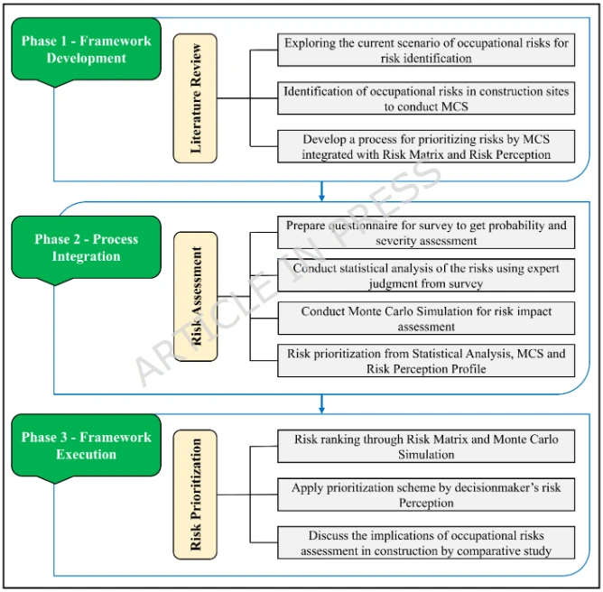
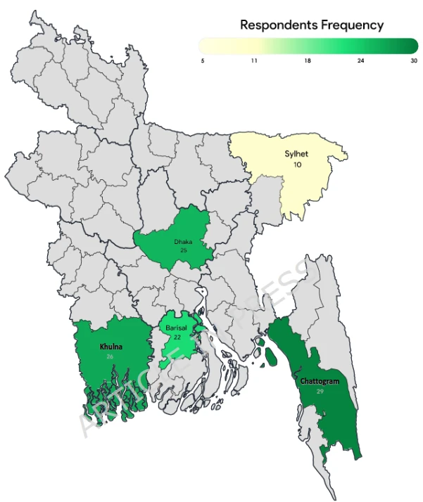
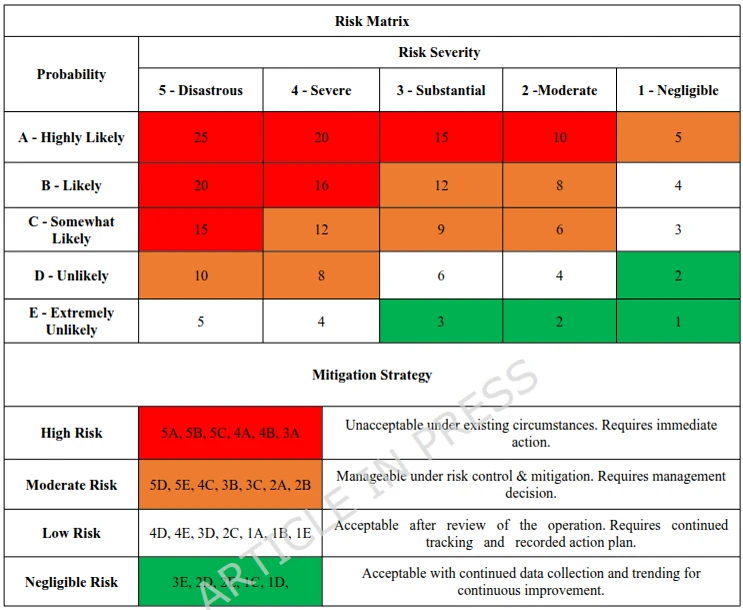

A Hybrid Framework for Occupational Risk Prioritization in Construction Projects Using Monte Carlo Simulation and Utility Theory
Md Tanvir Rahman Rifat, Shuvo Dip Datta, Md. Mehrab Hossain, Md Shah Jamal, Marcel Maghiar, Sani Aliyu, Irfan Gazi
Scientific Reports 16, 36398 · 2026
Abstract
South Asian countries, including Bangladesh, continue to experience unacceptably high rates of occupational accidents and fatalities in the construction sector, driven by rapid urbanization and infrastructure development. Traditional risk assessment methods, such as static risk matrices, frequently fail to capture the stochastic nature of these accidents, rely on point-based probability and severity estimates, and neglect the behavioral risk perceptions of decision-makers. This study develops and applies a hybrid framework that integrates Monte Carlo Simulation (MCS) with Utility Theory (UT) to prioritize occupational risks in construction projects in Bangladesh. Primary data were collected through a structured questionnaire survey of 112 construction professionals across 43 infrastructure projects in Bangladesh, who assessed the probability and severity of 30 occupational risks on a five-point scale. For each risk, triangular distributions, parameterized using minimum, mode, and maximum values derived from survey statistics and bounded within the 1–5 rating scale, were specified in @Risk. A total of 5,000 Monte Carlo iterations were executed to ensure convergence stability in the simulated risk exposure distributions. Simulated risk exposure indices were subsequently transformed into utility-based priorities using an exponential utility function that explicitly represents risk-averse, risk-neutral, and risk-seeking decision profiles. Results indicate that falls from a higher level (RI = 22.3, SRI = 14.78), shocks from overhead powerlines (RI = 19.8, SRI = 13.51), and falling on the same level (RI = 18.6, SRI = 13.36) represent the most critical occupational hazards. The utility-based analysis translates simulated risk exposure scores into behaviorally interpretable priority values under risk-averse, risk-neutral, and risk-seeking decision profiles. The primary methodological contribution of this study lies in the explicit integration of probabilistic uncertainty modeling (MCS) with behavioral risk-preference modeling (UT) for occupational safety prioritization in a developing-country construction context. The framework provides a transparent, reproducible, and adaptable tool for decision-making in construction safety. Its findings are intended to guide practitioners in resource allocation and intervention planning, though field-level validation in real-time safety management contexts remains a recommended direction for future research.
Framework
Three phases: framework development from the literature, risk assessment through the questionnaire, statistics and Monte Carlo simulation, and prioritisation that brings the risk matrix, the simulation and the decision-maker’s risk perception together.

Survey and Baseline
The 112 respondents worked across five divisions of Bangladesh. The simulation output is compared against a baseline 5×5 risk matrix and its mitigation bands.


BibTeX
@article{rifat2026risk,
title = {A hybrid framework for occupational risk prioritization in
construction projects using {Monte Carlo} simulation and
utility theory},
author = {Rifat, Md Tanvir Rahman and Datta, Shuvo Dip and Hossain,
Md. Mehrab and Jamal, Md Shah and Maghiar, Marcel and Aliyu, Sani
and Gazi, Irfan},
journal = {Scientific Reports},
volume = {16},
pages = {36398},
year = {2026},
doi = {10.1038/s41598-026-63788-2}
}